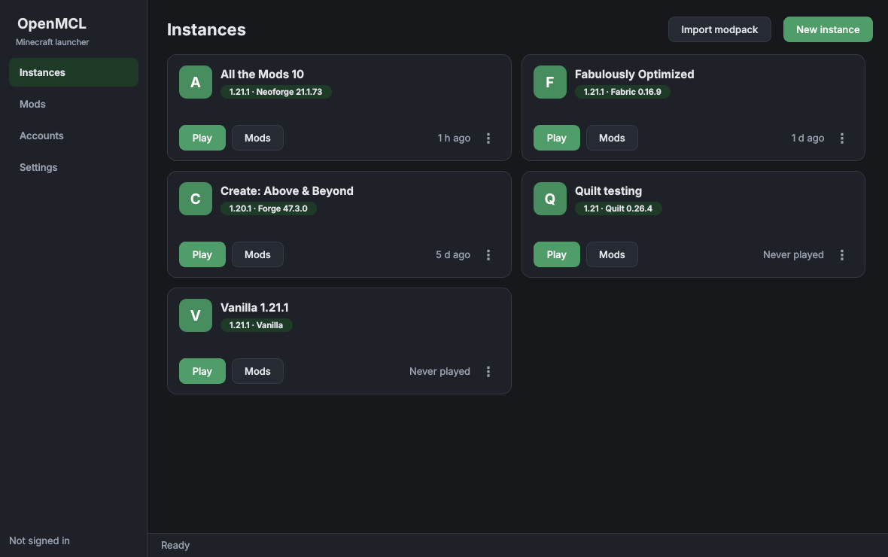

OpenMCL gives each Minecraft setup its own worlds, mods and Java, so updating one never breaks another. Four mod loaders, installed for you. Modrinth and CurseForge in one search.

Mojang only accepts sign-ins from registered applications, so OpenMCL cannot ship with a sign-in key of its own. You register a free Microsoft application and paste its ID into Settings. It takes a few minutes, once.
You also need a Microsoft account that owns Minecraft: Java Edition. The setup guide walks through every click.
The things a launcher is for, without the parts that get in the way.
Own worlds, mods, configs, memory and Java version. Break one, the rest are fine.
Pick a loader when you make an instance. It installs itself, including Forge's patching step.
Search Modrinth and CurseForge side by side, filtered to the version and loader you're actually running. Dependencies come along.
Import .mrpack and CurseForge zips. Export any instance back out
to share it.
Check every installed mod against its newest build, then update the ones you want.
Three themes, any accent colour, per-instance settings for everything that matters.
Things people usually find out after downloading.
Python isn't needed — each download is self-contained.